本机内容，准备就绪
文件与网页，交到需要的人手中。
让本机，成为服务入口
文件、网页和轻量应用，沿着同一网络抵达。
HttpLocalServer
本机内容 · 按规则开放
桌面
手机
浏览器
一个程序，两种服务
FileTrans × Server
HttpLocalServer
FileTrans
共享文件，浏览与交付
Server
托管网页与轻量应用
启动，即提供服务
默认8000端口 · 监听与目录均可配置
右侧为实际程序运行界面。命令行片段为启动示意。

扫一扫，直接打开
网页与 CLI 都能扫码，手机无需手动输入地址。
网页二维码

https://example.com网页与 CLI，都能交出入口。

熟悉的文件工作区
列表与网格，各有习惯。
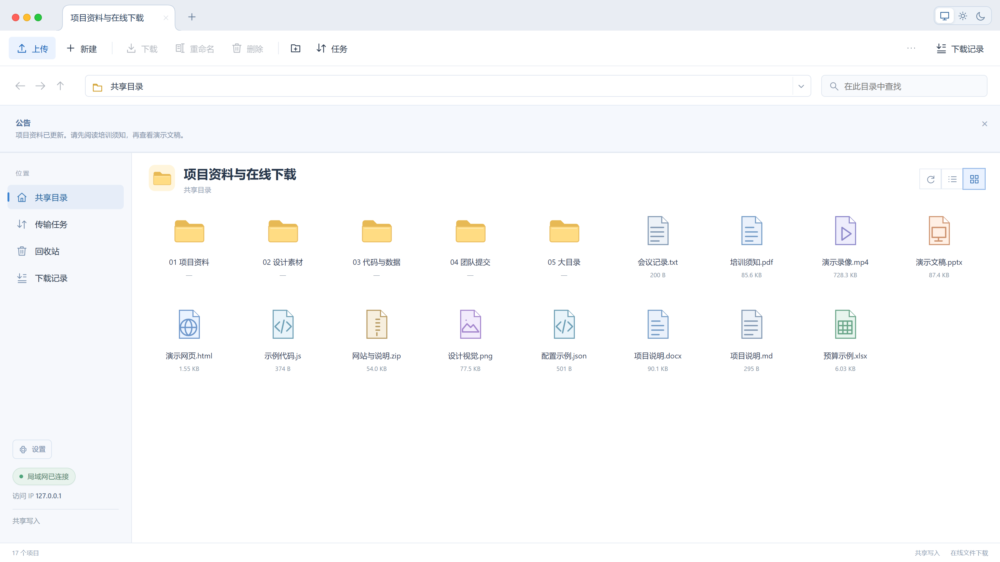
桌面与手机，各有空间
系统、白天、夜间，随你切换。
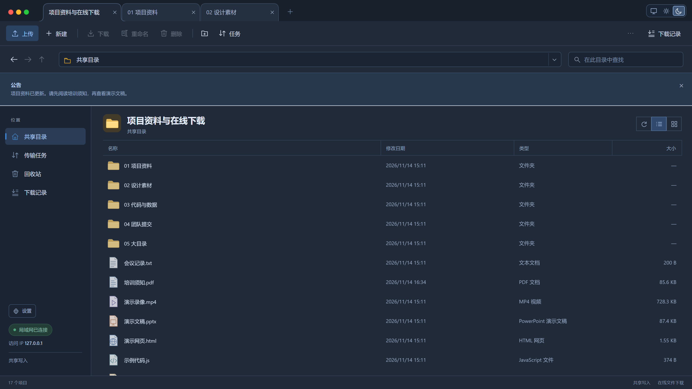
把路径留在标签里
实时拖动 · 独立历史 · 可输入路径
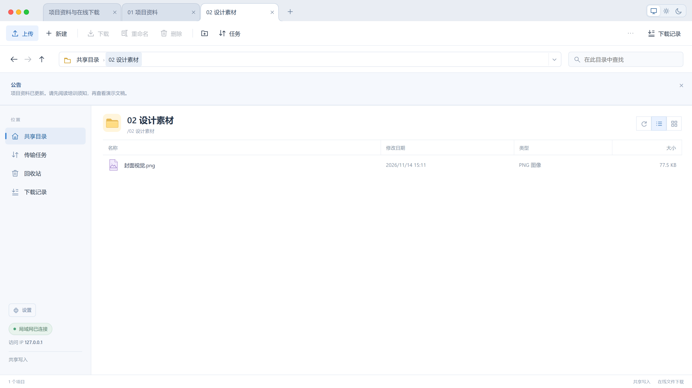
只加载眼前需要的
100项分页 · 文件名检索 · 更新提示
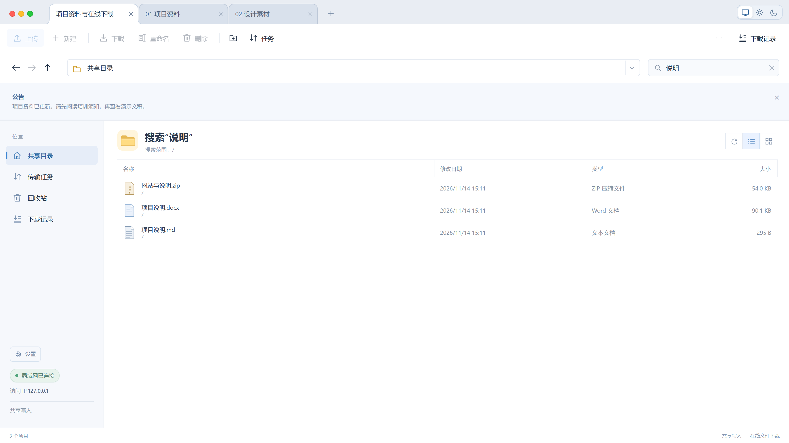
大文件，按块抵达
浏览器管理下载，Range与版本检查守住边界。
主机
按区间读取
浏览器
管理普通下载
机制示意；普通下载的进度、暂停与恢复由浏览器管理。
暂停之后，接着做
排队、检查点、重新授权与前缀校验。
上传任务
任务可暂停后继续
进度与错误反馈
文件夹，两种交付
支持时直接保存；其他环境由浏览器打包。
整个文件夹
保留目录结构
大型目录仍受浏览器能力与本地资源预算约束；图为机制示意。
拖进来，放到正确位置
文件夹上传 · 落点明确 · 冲突确认
复制、移动，保留余地
跨标签操作 · 跨挂载先核对再删除
新建，再编辑一点
现代桌面增强，旧环境保留纯文本。
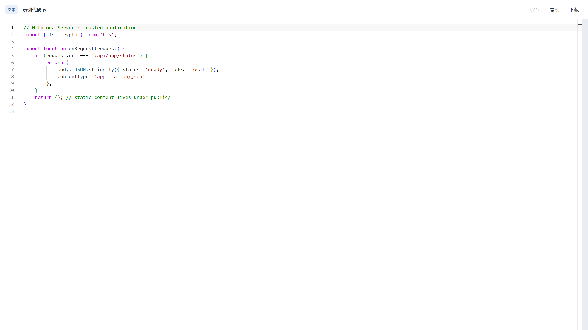
后缀不见，内容仍有线索
文件签名 + 本地Magika内容推断
扩展名被移除
推断为图像 → 使用图像预览
识别不是绝对判断；权限和预览策略继续生效。
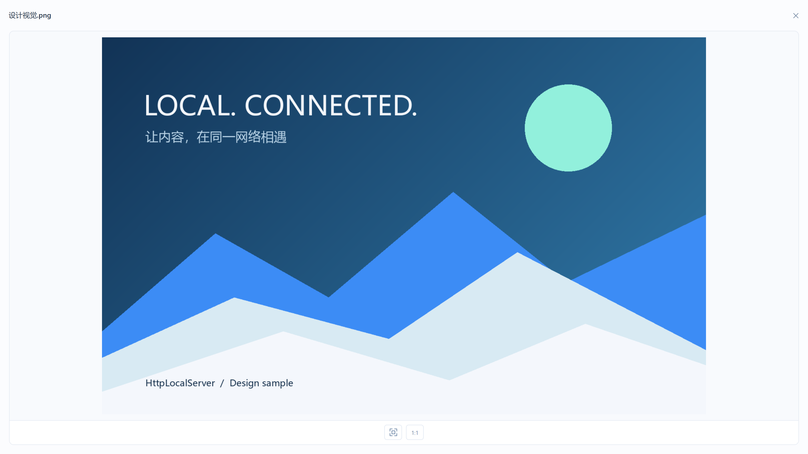
文档，连续阅读
Word与PDF · 选择复制 · 自适应页面
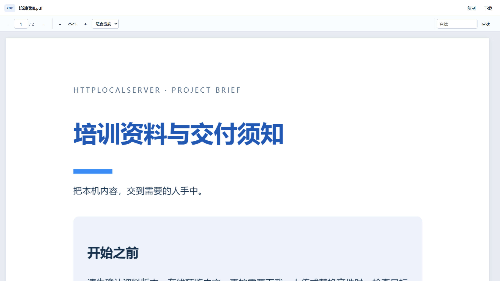
演示文稿，有自己的节奏
比例缩略图 · 放映 · 触摸翻页
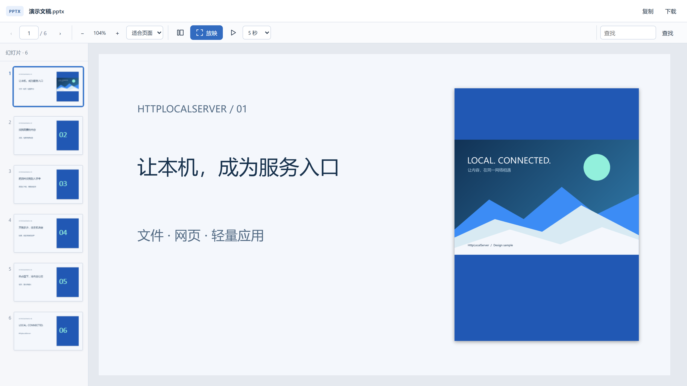
表格，不只是一张截图
区域与字符选择 · 合并单元格 · 复制
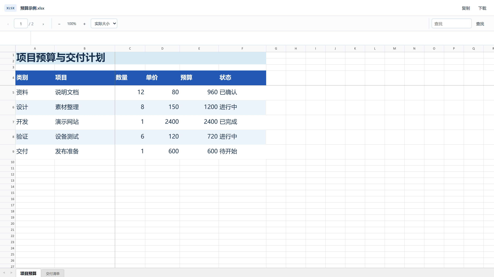
从说明，到结构化数据
Markdown · JSON树 · 文本
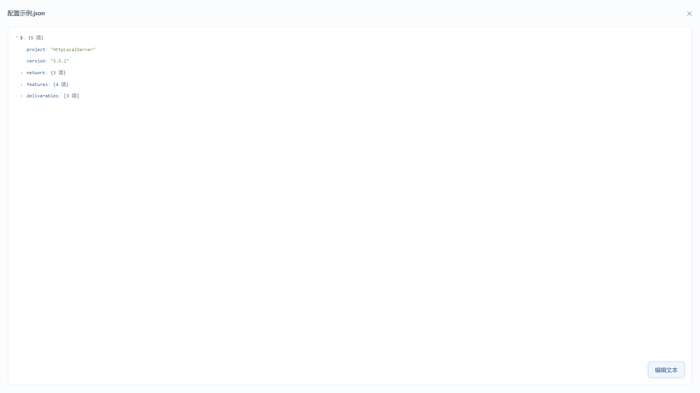
图像、网页，流式媒体
放大、定位、音量与倍速。
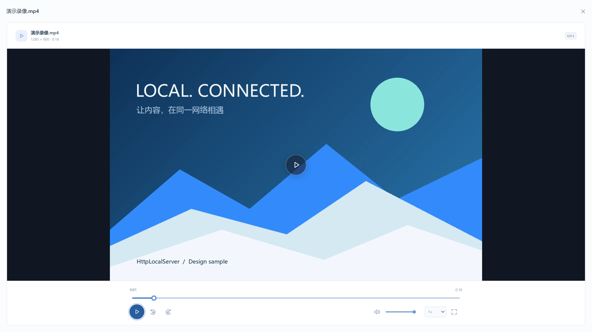
缩略图，也由主机决定
默认关闭 · 预览后捕获 · 客户端内存
ZIP预览，三种取舍
关闭 / 主机按需 / 下载后浏览器提供
依赖能跟上，展开有边界
包内网页与Markdown · CRC与有界解压
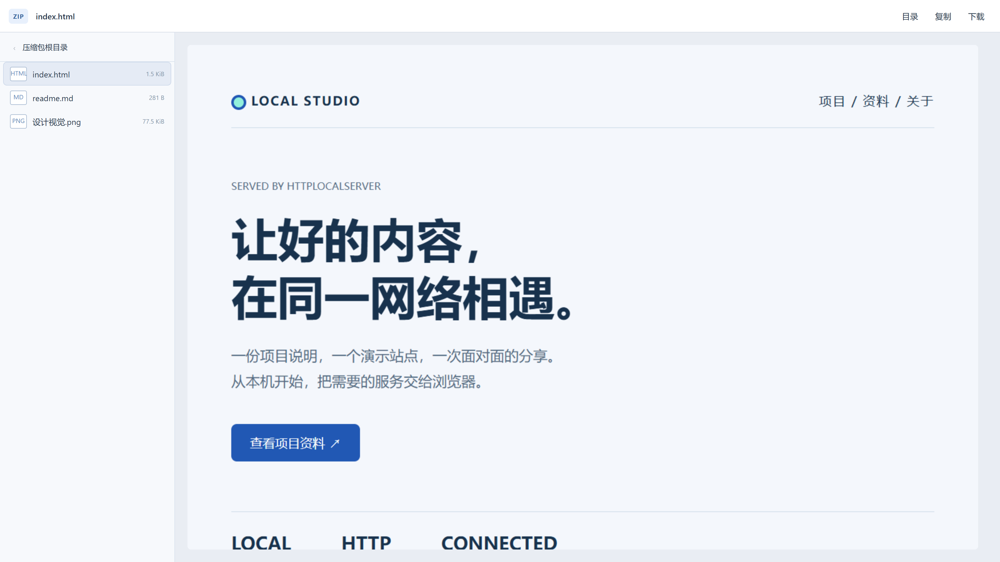
开放多少，由你设定
只读、共享写入，或按IP独立提交。
有人提交，才有他的目录
按需创建 · 姓名审核 · 空目录回收
先浏览
专属目录可先显示为空
目录未落盘开始上传
收到内容才创建目录
按需建立姓名审核
主机批准后公开胶囊
审核后显示空目录回收
无人浏览且没有活动上传
仅清理空目录/_clients/192.168.50.21/林同学重要的文件，放到视线里
公告与多个关注胶囊，定位或下载。
把已有目录，接成入口
主机目录、系统根与磁盘分区。
E:\Documents/srv/projects显式启用统一网页入口
别人的目录，逐步汇入
持续共享 · 访问优先 · 已完成副本保留
提供方浏览器
主机完整副本
完整上传后原子发布
访问者
由主机分发内容
来源离线时，完成副本仍可使用
先核对，再完整发布
COW双代读取 · 版本冲突 · 额度与流控
正在读取
下载持有旧文件句柄
保持完整旧代旧版本
已有读取继续使用
新写入
暂存 · 刷盘 · 校验 · 发布
新请求
发布后读取 V2
✓访问、身份、加密
登录退避 · 严格主机 · 可选HTTPS
127.0.0.1 / ::1不该开放的，守住边界
实际依赖冻结 · 路径约束 · 文件身份
当前配置 · config.json冻结 · 不可操作私有状态目录冻结 · 不可操作活动脚本与应用包冻结 · 不可操作使用中的 TLS 密钥冻结 · 不可操作用户资料/config.json普通同名文件按路径和文件身份判断
不按文件名前缀一概冻结
规范路径、安全打开、权限与身份再次检查
主机统一设定规则
配置可保存，CLI优先，运行状态可查。
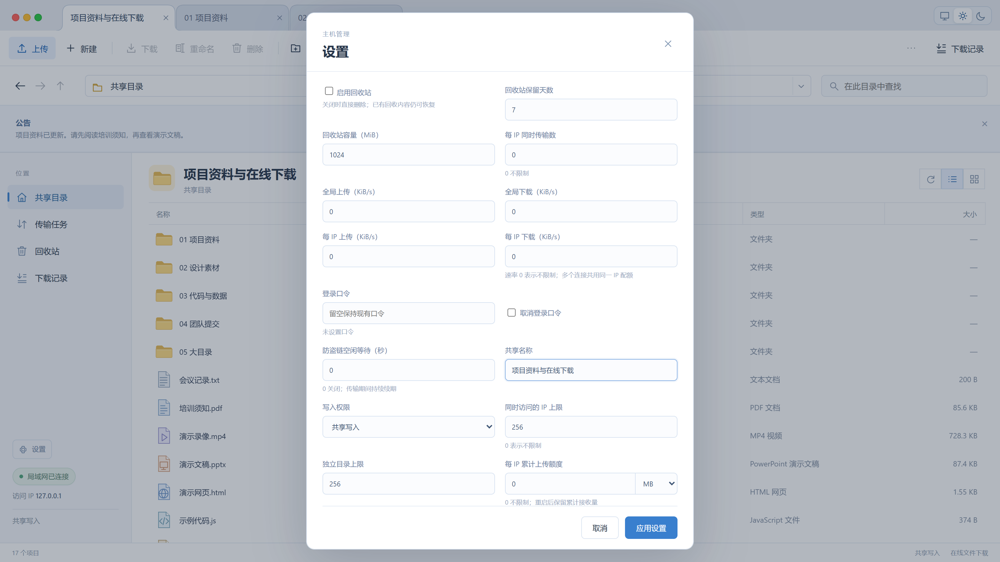
它也托管网站
静态托管 · 默认文档 · SPA与错误页

一个ZIP，装下轻量应用
公开前端，保留后台，独立管理来源。
公开前端
后台模块 · 不公开
局域网应用
IP : 应用端口请求经过登录与访问策略
localhost : 管理端口设置 / MCP · 仅回环能做事，也有能力边界
受限fs与SQLite、ZIP、压缩、类型和摘要。
import {fs, wasm} from 'hls';
const app = wasm.instantiate('/calc.wasm');
const result = app.exports.add(19, 23);
fs.writeText('/results/latest.json',
JSON.stringify({result}));已授权共享目录 · 受写方法约束脚本控制，Wasm互操作
QuickJS + WAMR · 解释执行 · 有界资源
QuickJS
add(19, 23)可信控制逻辑
WAMR
CPU 解释器 · 受限 Wasm 互操作
数值返回
给AI工具，一个受控入口
本机MCP · 只读工具 · 独立令牌
本机 AI 工具
独立 Bearer明确启用 MCP
结构化结果
沿用路径、冻结与权限限制
忙时分担，闲时让位
热点缓存 · 合并请求 · 线程伸缩与退火
原生分块读取
同块冷请求合并
重复的工作，少做一次
可信编译复用 · 新上下文 · ZIP静态缓存
源码编译一次
可信内存字节码
独占外壳复用
空闲池 · 逐次新上下文
新调用，新状态
异常与待办任务回收
解压并校验 CRC
同一资源冷请求合并
热点保留缓存
默认 16 MiB，可设为 0
每次请求检查
权限 · 私有模块 · 源版本
适合时，共同分发
可选PCDN · 校验分块 · 缺块回源
缓存节点 / 挂载源
校验过的内容块
本页可关闭发送主机
授权协调 · 缺块回源
接收者
右键选择 P2P
SHA-256 分块校验0–64 MiB / 每页共享缓存普通下载始终默认兼容，按实际能力说话
平台适配和实测范围，分别呈现。
按浏览器能力增强
收益，用可复查结果呈现
3.5.1本机短测与针对性回归。
一个入口，按规则开放
资料分发、团队提交、网站演示、内网工具。
HttpLocalServer
文件服务，也是 HTTP 服务
让本机，成为服务入口
HttpLocalServer
HttpLocalServer
让本机，成为服务入口。
FileTrans
共享文件，浏览与交付
Server
托管网页与轻量应用
第三方组件仍遵循各自许可与通知要求。